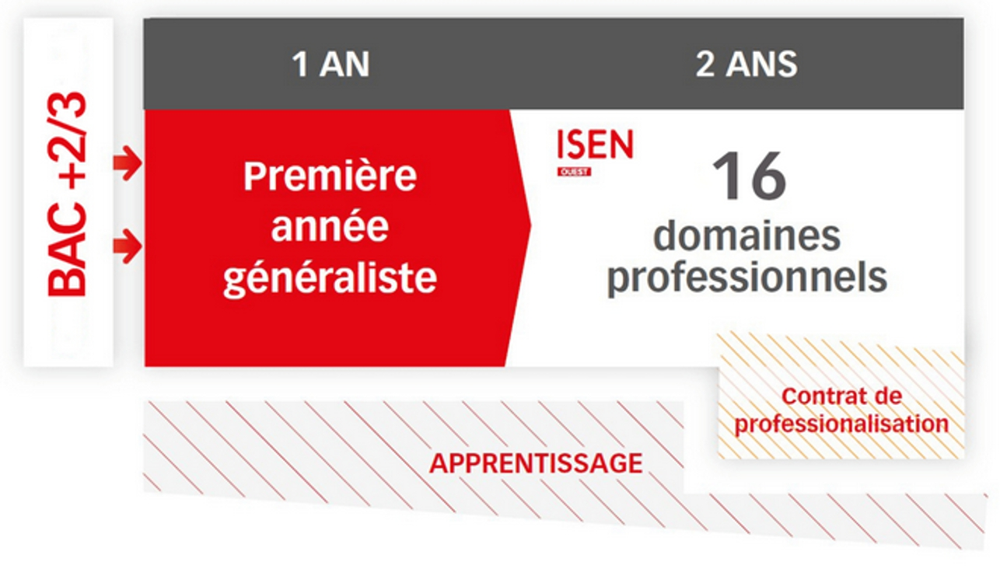

Le cycle ingénieur correspond aux trois dernières années de la formation d’ingénieur. Sous statut apprenti, ces trois années sont réalisées en apprentissage au sein d’une entreprise d’accueil.
Tout au long de cette formation, vous alternez les périodes à l’école et les périodes en entreprises en montant progressivement en compétence. Ces périodes durent environ 6 semaines lors des deux premières années, puis 6 mois la dernière année. Ces rythmes d’alternance permettent aux étudiants de travailler avec des entreprises sur tout le territoire français.
